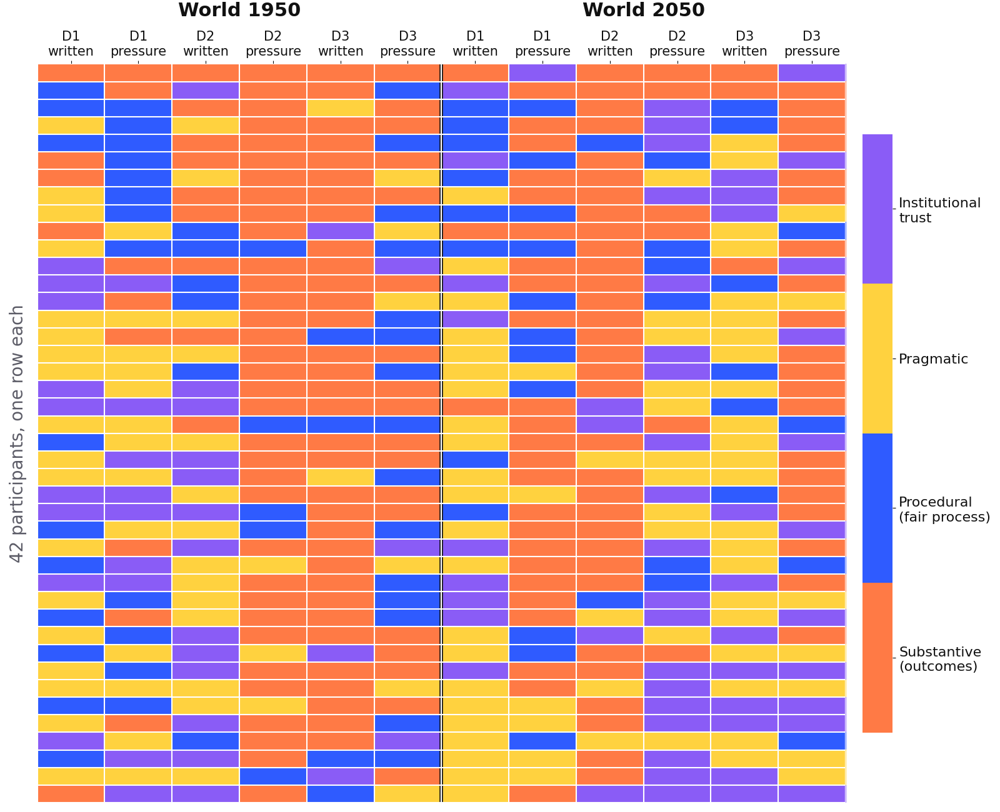

Do people actually do what they say they believe? I analyzed how 42 players reasoned about justice in a democracy simulation game, and built an AI grader for their 480 written answers that agrees with experts as well as the experts agree with each other.
My role
The data analysis and modeling: the AI grader and its validation, the statistics, the clustering, and an AI-player simulation. The data was collected by the research team.
A research team with 480 answers nobody could grade
Players faced dilemmas in two fictional worlds, 1950 and 2050. Each dilemma was asked three ways: a quick multiple-choice click, a written explanation, and a reply to a pressure question. The team wanted to know whether a person's sense of justice is a stable trait, or a state that shifts with the situation.
The researchers
Needed every written answer scored on two scales, justice orientation and argument quality. Coding 480 answers by hand twice wasn't realistic.
Key decisions
How I made the AI grader trustworthy
Use human disagreement as the bar
Chose
Two experts scored a 10% sample (48 answers). Their agreement with each other became the ceiling the AI had to reach.
Gave up
A simple "accuracy" number against one person's labels.
Why
Experts don't fully agree either. Asking the AI to beat that ceiling would be asking for noise.
Never tune on the test set
Chose
Separate answers for examples and for evaluation, bootstrap confidence intervals, and a written protocol to avoid fitting the prompt to the test answers.
Gave up
A higher score I couldn't trust.
Why
With only 48 expert-scored answers, it's easy to fool yourself.
Compare setups, guard against style bias
Chose
Several prompt designs (a plain baseline, an anti-style-bias guard, few-shot examples, a decomposed rubric) across several models, measured with weighted Cohen's κ.
Gave up
One prompt, written once.
Why
A grader that rewards well-written answers over the actual reasoning would quietly bias every finding after it.
Under the hood
From raw answers to a clear answer
Six notebooks, in pipeline order, plus scripts that run AI agents through the same 12 scenarios.
Results
The AI grader reached the human ceiling
expert vs expertbest AI judge vs experts
And the answer: values are a state, not a trait
0 of 42players were consistent enough to look like they hold a fixed orientation
r = 0.19how well a player's 1950 choices predict their 2050 choices (p = 0.24)
28.7%of the time, the click and its own written reason agreed
r ≈ 0.00between what players said in a survey and what they did in the game
−0.54average shift under the pressure question (p < 0.001)
0.16silhouette score: no hidden personas, just one continuous gradient

Every player, every decision. If values were a fixed trait, each row would be a single color.
What I'd measure next
From a strong signal to a result
Bigger and sturdier: 42 players and two raters is the minimum for this kind of check. A third rater and a larger sample would make the findings something I'd call a result.
For the game itself: since the question format moves the answer, test which format best predicts real choices, and design the game around that.
Human vs AI: finish comparing the simulated AI players with the humans, to see whether models show the same say-do gap.